Gradient Magnitude Computation: The gradient magnitude is calculated by first convolving the image with a Dx kernel such as [-1, 1] to calculate the derivative along the x axis. Then, convolve the image with a Dy kernel such as [[-1], [1]] to calculate the derivative along the y axis. To compute the gradient magnitude at a point (not technically a pixel because I am using [-1, 1] instead of [-1, 0, 1] which is the true derivative), add the squares of the Dy value and Dx value at that point, and then take the square root of that sum.
Original Cameraman:
Question 1: This smoothed approach, whereby we first blur the image and then compute the gradient, has far less noisy edge detections in it than in the unsmoothed edge detector image. The unsmoothed version picks up a lot of horizontal edges in the grass behind the cameraman, whereas the smoothed version ignores those and focuses on the edges of the tripod and the man.
Question 2:Taking the derivative of the gaussian filter, and blurring then taking the derivative, are equivalent and appear equivalent in the image.
Smoothed Gradient Magnitude:Original:

Sharpened:
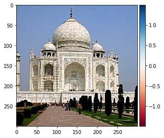 FerrelOriginal:
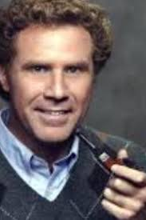Sharpened:
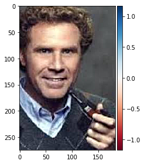 BanffOriginal:

Blurred:
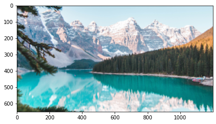Blurred then Sharpened:
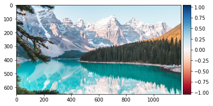Derek:

Nutmeg:

Hybrid:
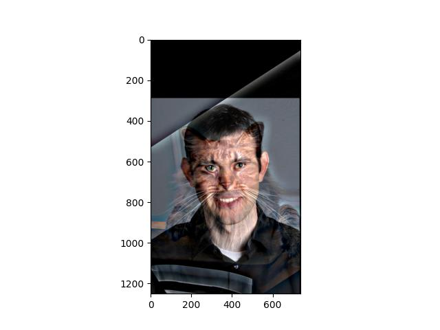Derek FFT:
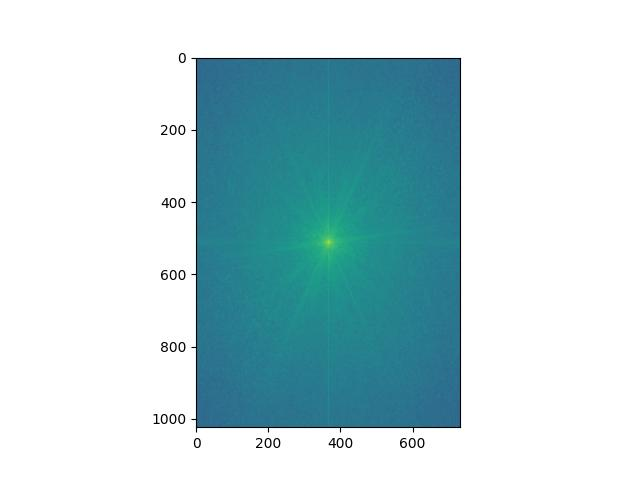Nutmeg FFT:

Derek Filtered FFT:
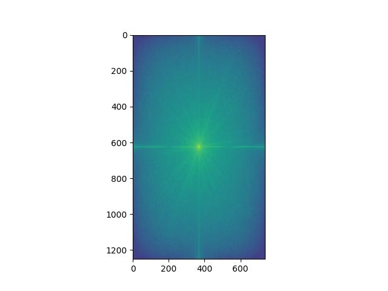Nutmeg Filtered FFT:
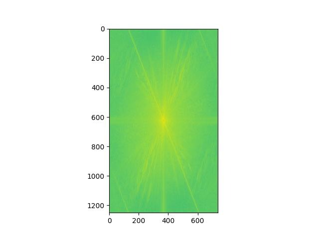Hybrid FFT:
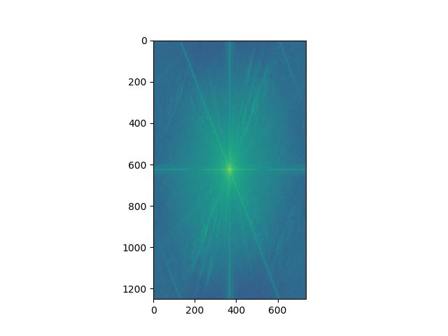Lion:

Dog:

Hybrid:
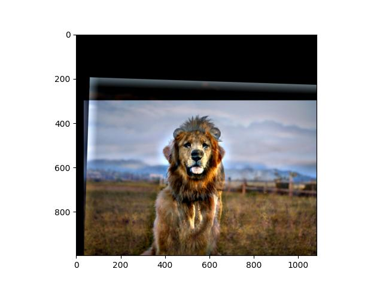The Happy and Mad hybrid image failed. I suspect it is the images are relatively similar, and we are so trained to recognize anger that we easily pick out the mad face from the happy.
Happy:

Mad:
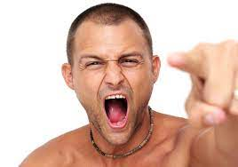Hybrid:
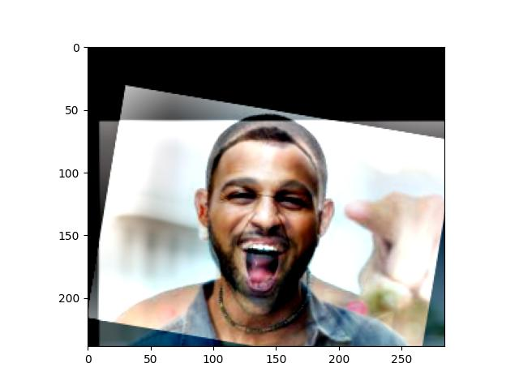

 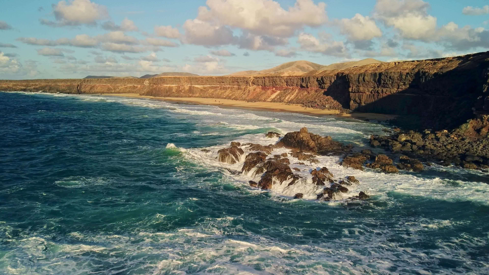
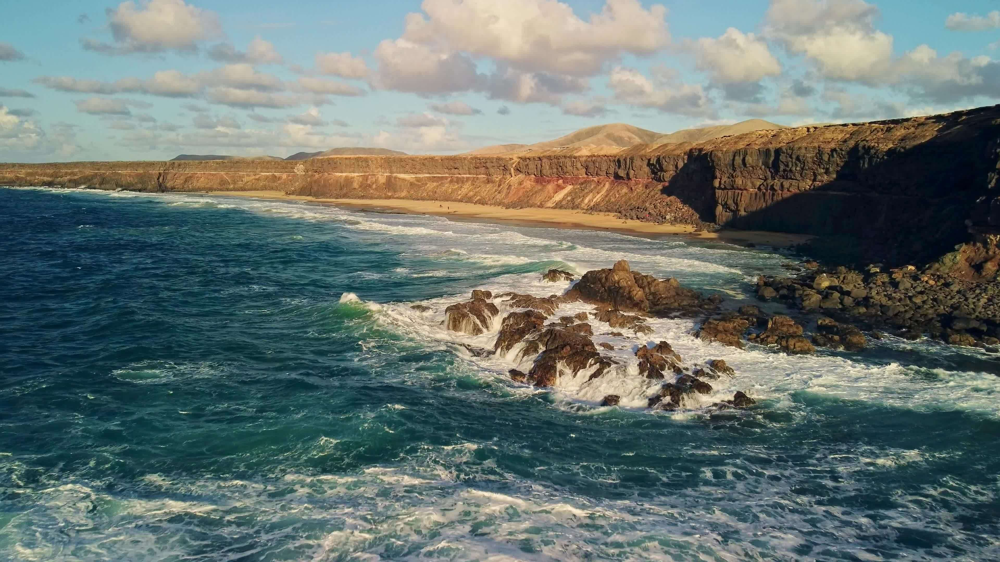